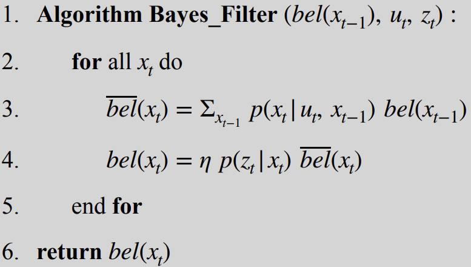
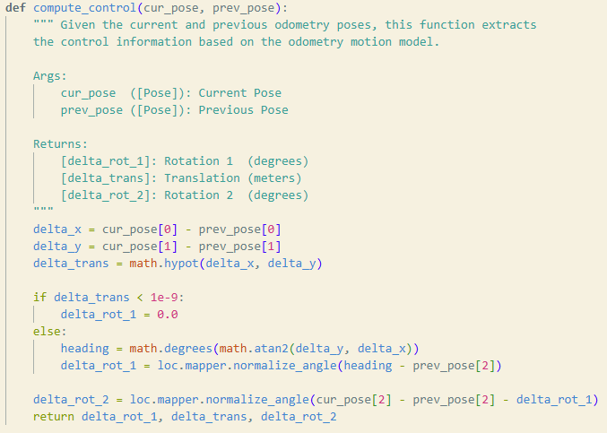
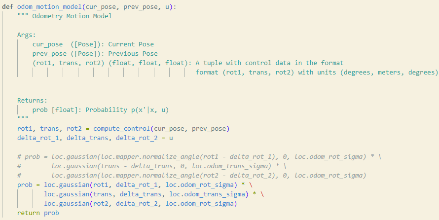
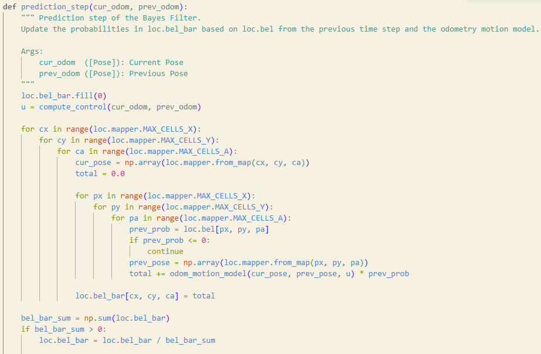
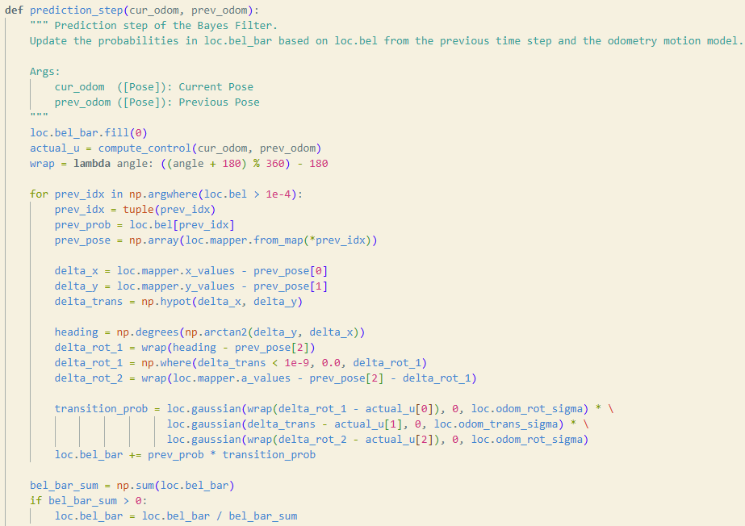
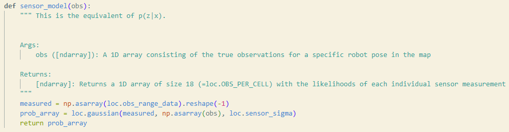
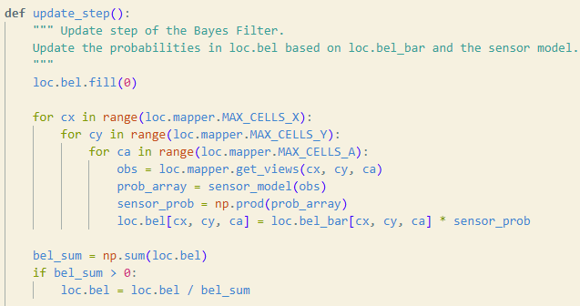
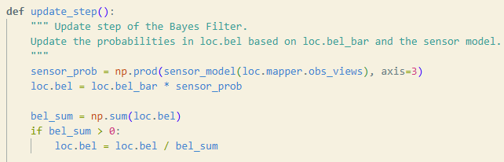

To start the simulator, I followed the instructions here: https://fastrobotscornell.github.io/FastRobots-2026/FastRobots-Sim.html
I then went through and familiarized myself of how the Baye's Filter Algorithm works with the algorithm pseudocode below.

In the lab 10 notebook they provided, there are five empty functions to help structure the implementation.
The compute_control() function returns the first change in rotation (delta_rot_1), the straight line distance traveled by the robot (delta_trans), and the final change in rotation when the robot gets to the waypoint (delta_rot_2). Knowing this, I basically got the Euclidean distance between the two points and used that for delta_trans. To get the first change in rotation, I used trigonometry to determine the headings based off the change in x and change in y of the robot. My function implementation also sets the first change in rotation to 0 if the translation was super small.

The odom_motion_model() function gives how "probable" the transition of the robot state from prev_pose to current_pose given the actual control action. This function basically just used the Gaussian function to find the relative likelihood of x in a normal distribution with mean mu and standard deviation sigma.

The prediction_step() function was interesting to implement as I initially looped through every possible combination of two states with one being the previous and the other being the current state. Then it uses odom_motion_model() to find the probability of that transtition happening given the control action from compute_control. It adds up all the transition probabilities and updates the temporary belief (bel_bar) with them. This function was rather slow so I utilized numpy's vectorization calculation abilities instead of using a bunch of nested for loops.
Nested Loop Version:

Vectorized Version (also skips cells with very small beliefs to save time):

My sensor_model() function also utilized vectorized calculations to speed it up. It uses the Gaussian function to see the probability of the sensor measurements at that pose.

My update_step() function initially also iterated through every possible state first to update the belief grid with sensor_model()'s probabilities at each possible state. This was too slow, so I used Numpy's vectorized calculations to speed it up.
Nested Loop Version:

Vectorized Version:

Below is a video of me running the iterative nested for loop version:
Below are videos of me running the vectorized versions:
As you can see, it took a significant amount more time for the robot to localize with the nested for loop version. By the time the iterative for loop version got half way through the waypoints, the vectorized versions had already finished. Also, you can see how bad the odometry model is in red compared to the ground truth in green. The belief in blue matches much better to the ground truth. The noisy control data in the odometry motion model is what is contributing to how bad the odometry is, but the Baye's filter integrates the sensor data which seems to significantly help the robot know where it is.
I referenced Trevor Dales's website: https://trevordales.github.io/MAE4190/lab10/, to help me better understand the Baye's Filter algorithm and the function implementations and understanding of them.